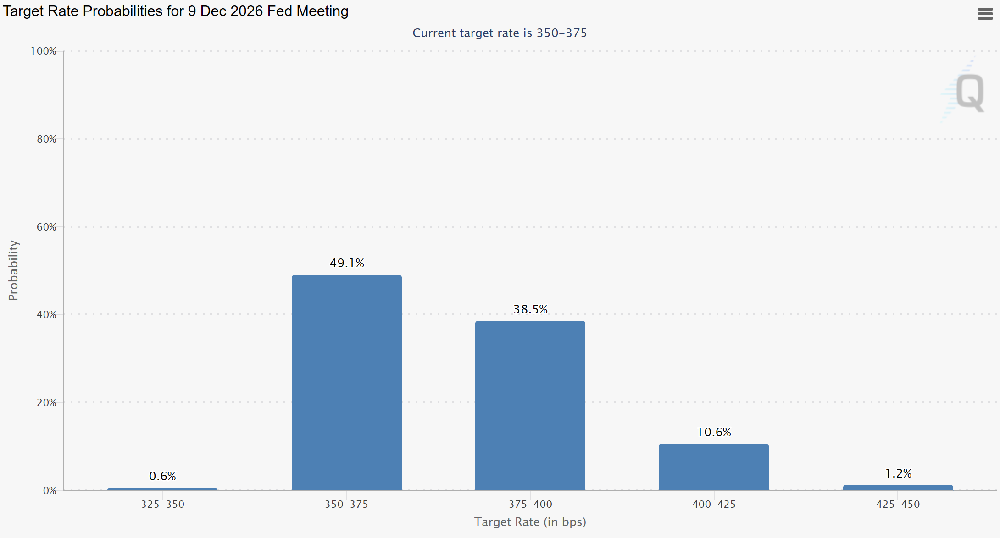

24/05/26 - 30/05/26
10 min read
Choose Language (Translation Errors may occur)
Disclaimer: The information provided is for educational purposes only. It does not constitute financial, investment, or personal advice. I am not a financial advisor or professional – I don’t know anything about the market or how it will perform (notice how I've used words like "perhaps" or "maybe"), thus the content here should not be taken as financial guidance. I am not a CFP, CPA, PFP or local legal equivalent, please seek professionals for financial advice, and by reading this you agree that I am not liable if I am wrong. Do your own research. The strategies, products, or services here are not being recommended, endorsed, or guaranteed. Past performance is not indicative of future results, and all investments carry risk, including the potential loss of principal.
Weekly Summary
- The war could be over soon! On Wednesday morning, Iran's state television reported that a proposal had been sent to extend the US ceasefire and reopen the Strait of Hormuz, increasing trader's expectations of a potential deal to end the conflict. As a result, brent crude fell below $90 a barrel.
(Update Wednesday night) Oops, Nevermind! Trump is not satisfied with the deal (Davies and Jr). I guess we'll have to wait for a few months before it actually ends.
- Southeast Asian countries are attempting to mitigate the war's impacts on consumers. Indonesia increased its interest rate by 50 basis points (bp, for reference 1 bp is 0.01%) to support its currency whilst Thailand approved cash transfers to counter higher energy costs. This has further deteriorated budgets and increased long-term borrowing costs (in the form of bond yields) for their respective economies. Their exchange rates has also weakened significantly. Perhaps now's the time to exchange some currency for future travelling...
- Chinese firms have been investing in foreign consumer goods companies, with outbound M&A increasing to $27 billion USD last year. They have been expanding internationally due to intense domestic competition and deflationary pressure caused by neijuan (involution, characterised by unnecessary competition and "the race to the bottom").
- EU countries have been reluctant to release oil reserves, as they will be costly to replenish in the future.
- Investors and institutions have been increasingly buying into covered call funds, which provide a buffer against downturns in the market but limits upside (Johnson). In the face of such volatile and unpredictable markets, investors have been looking for places of security; previously, we've seen record inflows into international ETFs, and now they've turned their attention to covered call funds.
To the moon! (Whether you like it or not)
SpaceX is going public on June 12th, as the company prepares for its final steps to becoming the largest IPO in history (Williams).
Usually, when a stock goes public, the share price rises on the first day. However, in this case, the share price may also rise again after 15 days. Why? Because Nasdaq recently implemented a fast-track system that allows SpaceX to join the Nasdaq 100 index after just 15 days (Sen and Basil). S&P is also considering fast-tracking it into the S&P 500.
What does this mean for ETF investors? Well, if you love SpaceX, index funds such as QQQ and eventually VOO will hold SpaceX, and you won't need to buy in yourself (if you really wanted to, you could buy the individiual stock, but that increases your portfolio exposure to SpaceX). If you hate SpaceX, your index fund will probably buy SpaceX for you too. The problem for the latter group is that it forces passive ETF investors to buy into SpaceX at a relatively high valuation, and the smaller stocks that no longer make up the 100 biggest companies get sold out and removed from indices later in the year.
Those smaller companies are usually in less attractive industries and do not involve as much tech, so they tend to have slower growth rates. This may also become a problem for the S&P 500, because as the proxy for the US stock market, it has been holding a lot more weight in the tech industry than ever before. And despite tech companies having higher expected returns, they also come with higher volatility.
How do we protect ourselves? As aforementioned, I am not a big fan of stopping a dollar-cost averaging (DCA) plan or selling out of the index just because of this one development. To be honest, in the long run, if SpaceX were to achieve its goals, it could be a very profitable company and have a large competitive moat - how many companies can build a colony on mars or recycle rockets or build data centres in space. However, a way to cushion the blow in case of an AI-driven market crash would be to diversify into different assets, such as international stock ETFs like VEU or VYMI. If a market-wide crash were to occur, they wouldn't be unharmed, as traders would withdraw funds from other assets to meet margin calls, but they would probably decline less than that of a tech company. Purchasing bonds may also be a good option. Long-term US borrowing costs have been high due to the US-Iran war, which are exacerbated by inflation expectations. If inflation continues to rise and the FED hikes rates, bond yields would increase further.
Rate hikes this year?
Wall Street thinks that the FED will raise borrowing costs this year as Warsh takes over as FED chair:

Traders price in one rate hike at the end of this year (CME Group). For reference, the current FED rate is 350-375 bp.
What does this mean for us? Firstly, bond yields would increase (implying bond prices will fall). This is because new bonds would have to be issued at higher coupons in order to remain attractive to investors, thus older bonds with their previous fixed interest rates would no longer be attractive, causing their prices to fall. Investors may choose to withdraw money from bonds and put them into inflation resistant assets, so we may observe more inflows into equities or gold.
But of course, as the market is based on investor's expectations, by the time the actual rate hike is implemented, there might not be much movement if investors expect that to occur. Only surprises will truly move markets.
Bibliography
- CME Group. “Target Rate Probabilities for 9 Dec 2026 Fed Meeting.” FedWatch, Website, 27 May 2026, www.cmegroup.com/markets/interest-rates/cme-fedwatch-tool.html. Accessed 27 May 2026.
- Davies, Maia, and Bernd Debusmann Jr. “Donald Trump Says US ‘Not Satisfied’ with Iran Deal Yet.” BBC News, 27 May 2026, www.bbc.co.uk/news/articles/c74dy9jw1q9o. Accessed 27 May 2026.
- Johnson, Steve. “Retail Investors Turn to ‘Options Income’ ETFs in Search for Yield.” @FinancialTimes, FinancialTimes, 21 May 2026, www.ft.com/content/e9c6c323-e2d2-4542-a402-cdf2d53787e9?syn-25a6b1a6=1. Accessed 27 May 2026.
- Sen, Anirban, and Arasu Kannagi Basil. “New Nasdaq Rules to Include ‘Fast Entry’ for New Listings on Benchmark Index.” Reuters, 30 Mar. 2026, www.reuters.com/business/new-nasdaq-rules-include-fast-entry-new-listings-benchmark-index-2026-03-30/. Accessed 27 May 2026.
- Williams, Sean. “Forget SpaceX’s IPO Day! Its Shares Can Skyrocket on July 7 -- but Retail Investors Would Be Wise to Avoid This Potential Trap.” Yahoo Finance, 27 May 2026, finance.yahoo.com/markets/stocks/articles/forget-spacexs-ipo-day-shares-112600234.html. Accessed 27 May 2026.